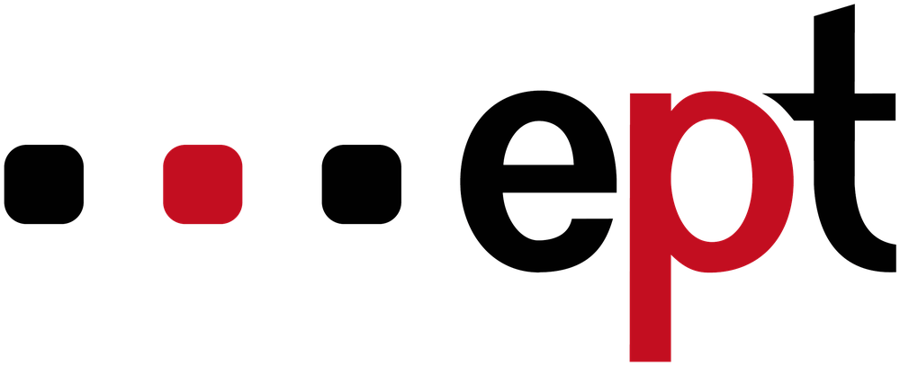

Návštěvník naskenuje doklad totožnosti, systém během pár vteřin rozpozná jméno a zapíše příchod. Recepce má vždy okamžitý přehled — kdo je v budově, kdy přišel a za kým jde.
Nic neopouští budovu. Doklad se zahodí hned po přečtení, databáze zůstává jen ve vaší síti — žádný cloud, žádná měsíční platba za úložiště.
Od naskenování dokladu po přehled návštěv — bez ručního přepisování a bez papírové knihy.
Kamera pozná jméno a příjmení z občanského průkazu, pasu i řidičského průkazu — stačí doklad namířit na kameru.
Příchod i odchod se zapisují jedním klepnutím s přesným časem — bez ručního vyplňování formulářů.
Kdo je právě v budově, historie návštěv i evakuační seznam pro nouzové situace — vše na jedné obrazovce.
Zpracování dokladu i celá databáze zůstávají ve vaší síti — žádná fotka ani jméno neopouští budovu.
Tři kroky mezi příchodem návštěvníka a zápisem v databázi.
U vstupu, na tabletu nebo telefonu — stačí doklad nasměrovat na kameru.
OCR přečte jméno a příjmení, návštěvník zvolí osobu, za kterou jde.
Kdo je v budově, jak dlouho, a kompletní historie návštěv na jednom místě.
Systém je navržený tak, aby s citlivými údaji návštěvníků zacházel co nejopatrněji.
Žádná cloudová závislost — zpracování i uložení probíhá lokálně, u vás v budově.
Doklad se zpracuje jen pro rozpoznání jména a poté se zahodí.
Po uplynutí nastavené doby uchování se záznamy automaticky odstraní.
Napište e-mail, telefon a co byste na systému chtěli pozměnit — ozveme se vám zpět.
Vaši poptávku jsme přijali, ozveme se vám co nejdřív.

VELYOS